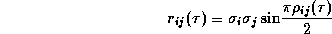
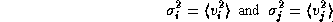

News
News
| Getting Started | Documentation | Glish | Learn More | Programming | Contact Us |
|
| VERSIONID |
News
|
Quality Assurance Group
quanta
quantization
quantization correction
A quasi-autonomous group within AIPS++ responsible for overseeing the quality of AIPS++ products. The QAG consists of the Code Cop, who oversees the code review process, the Rules Boss, who codifies and enforces AIPS++ coding rules, and the Chief Tester, who oversees the software testing process. The Head of the QAG may be contacted at aips2-cop@nrao.edu.
The tool for accessing the C++ Quanta library. This tool allows manipulation of measured quantities possessing units. A quantum with a coordinate system and reference frame is a measure.
A quasi-autonomous group within AIPS++ responsible for overseeing the quality of AIPS++ products. The QAG consists of the Code Cop, who oversees the code review process, the Rules Boss, who codifies and enforces AIPS++ coding rules, and the Chief Tester, who oversees the software testing process. The Head of the QAG may be contacted at aips2-cop@nrao.edu.
The conversion of a continuous variable into one of a finite set of values. In image processing, the process by which each pixel in an image is assigned one of a finite set of gray levels. In a digital correlator, the process which substitutes a small number of discrete levels for samples of a continuous time-varying signal. Quantization is also used in digital communications and CD-ROM technology to assign binary values to sampled audio signals. The combination of a sampler and a quantizer is known as a digitizer.
The cross correlation of two digitized signals is a monotonic function of that of the original analog signals. Knowing the inverse of this function, one can recover the cross correlation of the original signals by applying a quantization correction to the output of a digital correlator.
For one-bit (two-level) quantization it has been shown (J. H. Van Vleck and D. Middleton, The spectrum of clipped noise, Proc. IEEE, 54 (1966), 2-19) that the cross correlation r of two analog signals denoted by subscripts i and j is

where is the normalized cross correlation of the digitized signals and where

are the average power levels of the two input signals. The input powers must be separately determined in order to recover the cross power, as this information is lost in one-bit quantization. The correction in the form given above is known as the Van Vleck correction.
For three-level quantization or higher, the correction cannot be written in closed form and depends non-linearly on both the measured correlation coefficient and the signal powers, but it can be calculated to any desired accuracy by providing the correlator with enough computing power. (See, for example, D'Addario et al., Complex cross correlators with three level quantization: design tolerances, Radio Science, 19 (1984), 931-945.)
You could now go back to the:
Copyright © 1995,1996,1999,2000 Associated Universities Inc., Washington, D.C.
abridle@nrao.edu, 20 August 1996, 11:50 EDT